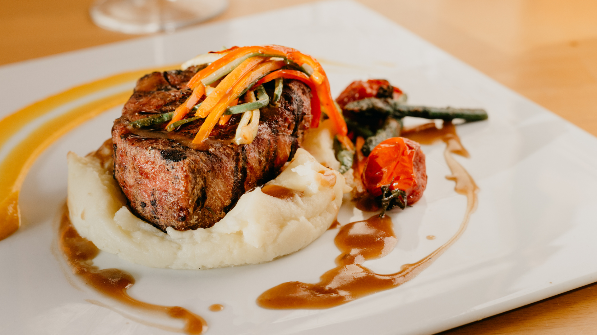
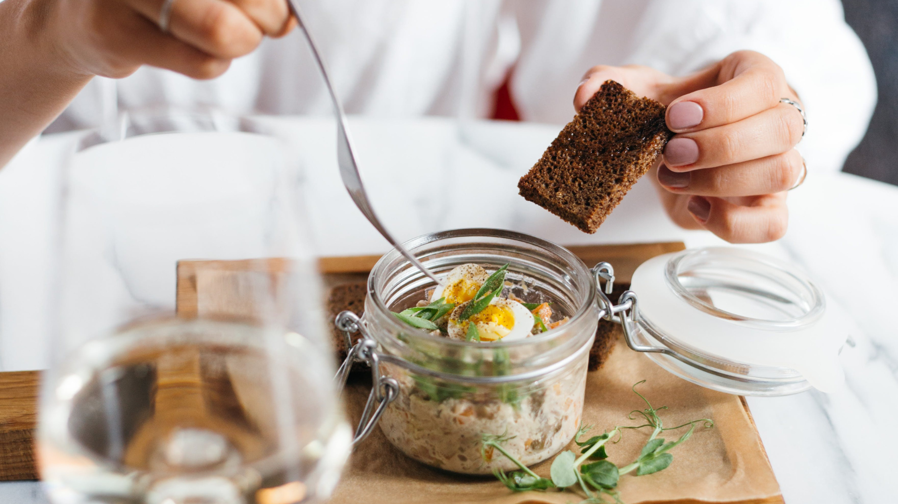

El restaurant Sagués ofereix una carta molt variada, on hi destaquen les diferents tapes i unes espectaculars paelles, en un indret idílic de Badalona, com és la Rambla.
Sagués neix al 2001 de la mà per l’amor a la gastronomia, resultat del maridatge de la cuina i el vi, del mar i la terra, de la cuina de proximitat i la gastronomia creativa. Una proposta sense estridències, propera i transparent, que aspira a aconseguir aquesta senzillesa que s’observa en la naturalesa. Sense parenceries, amb la lentitud d’un murmuri tan proper que ens emociona, la cuina de Lluerna cerca fer-nos veure el que sempre ha estat davant la nostra vista, però que encara no havíem estat capaços d’observar. Les nostres eines en aquest viatge: la cuina, l’amor i la creativitat i per descomptat, la vostra companyia, perquè no hi ha viatge sense bons amics.